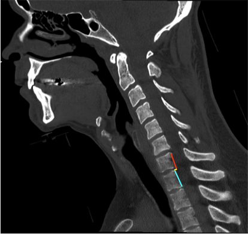

Adapted from: Feger J, Yap J, Knipe H, et al. CT cervical spine (protocol). Reference article, Radiopaedia.org (Accessed on 28 Dec 2025) https://doi.org/10.53347/rID-89993
1) Description of Measurement
Translation on sagittal reconstruction quantifies the anteroposterior displacement of one cervical vertebral body relative to an adjacent vertebra on sagittal CT images. It is a direct indicator of spinal instability and reflects disruption of the anterior and/or posterior ligamentous complexes, often in the setting of trauma.
This measurement is particularly useful for identifying subluxation, fracture–dislocation, and unstable injury patterns, and it complements facet-based assessments (facet overlap, facet step-off) and global alignment lines.
2) Instructions to Measure
3) Normal vs. Pathologic Ranges
Key points:
4) Important References
White AA, Panjabi MM. Clinical Biomechanics of the Spine. 2nd ed. Lippincott; 1990.
Harris JH Jr, Mirvis SE. The Radiology of Acute Cervical Spine Trauma. 3rd ed. Williams & Wilkins; 1996.
Dvorak MF, Fisher CG, Fehlings MG, Rampersaud YR, Oner FC, Aarabi B, Vaccaro AR. The surgical approach to subaxial cervical spine injuries: an evidence-based algorithm based on the SLIC classification system. Spine (Phila Pa 1976). 2007 Nov 1;32(23):2620-9. doi: 10.1097/BRS.0b013e318158ce16.
Daffner RH, Sciulli RL, Rodriguez A, Protetch J. Imaging for evaluation of suspected cervical spine trauma: a 2-year analysis. Injury. 2006 Jul;37(7):652-8. doi: 10.1016/j.injury.2006.01.018.
5) Other info....
Translation on sagittal CT is a direct, reproducible measure of instability
Particularly useful for detecting:
CT is optimal for bony alignment; MRI is recommended when translation is present to assess:
Even translation just above the threshold may be clinically significant when associated with neurologic symptoms or additional instability markers